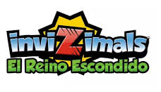

Invizimals
Invizimals La otra dimension
La otra dimension Las tribus perdidas
Las tribus perdidas ballena jorobada
ballena jorobada ballena azul
ballena azulInvizimals es el primer videojuego de la saga para PSP, Creado por la compañía Novarama y comercializado por Sony, y en la que se utiliza la realidad aumentada, el juego incluye una tarjeta sobre la que se visualizan los invizimals, e incluye la Go!Cam que se conecta en el puerto frontal de la PSP. En el 2014, la Editorial Panini creó una serie de dos videojuegos, en cual para usar se tiene qué comprar las cartas para ambos juegos. Algo para mencionar, existen más de 800 cartas (entre los dos juegos, ya que en la primera entrega hay aproximadamente 470 cartas) desde ediciones limitadas y versiones raras de los Invizimals, qué se clasifican en bronce, metal, plata, oro y diamante.
| Invizimals |
La otra dimension |
Las tribus perdidas |
| el reino escondido | ballena jorobada |
ballena azul |